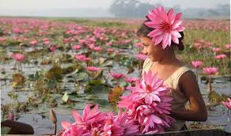

Live In Peace In Nature
Bangladesh is a land of six seasons and land of beauties.Each season have differnt natures and beauties.
People in Bangladesh enjoys six seasons doing various activities.Summer,Rainy,Autumn,Late Autumn,Winter and Spring are
the six seasons.
Summer Story
Photo
Location
Rainy Story
Photo
Location
Autumn Story
Photo
Location
L.Autumn Story
Photo
Location
Winter Story
Photo
Location
Spring Story
Photo
Location
Bangladesh is a land of six seasons and a land of beauties. The summer is the first season that lasts for Baishakh and Jaisthya.
It is the hottest and tiring season. It appears with Fruits and flowers but is accompanied with dusty storm that sometimes causes much
harm to men animals and plants. It sometimes blows away trees and houses and sometimes causes death to men and animals. During this season,
the earth comes nearer to the sun and gets heat and light. The day becomes longer than the night. As a result the earth becomes so hot that
man cannot bear the heat. The rivers, ponds, canals ad pools dry up. People sweat and get thirst and triad out of extremes heat. Sometimes
strong north-east storm blows away trees and roofs of our houses. Sometimes it causes death to away men ad animals; so, it is called kal-baishakhi.
The summer is the season of fruits and flowers. Mangoes, Jackfruits, black-berries, litchis, melons and many other juicy-fruits grow in this season.
Various kinds of flowers also blossom in this time. And various kids of another fruits ripen. The boy’s gifts enjoyed the summer holidays.
In this season people suffer for want of water. Any diseases like cholera small pox and measles break out. I addition to these, men, animals,
ad plants fall a victim to storm ad cyclones. Sometimes drought destroys crops. Despite of its defects this season makes soil soft for easy cultivation.
It grows us plenty of fruits and flowers. So, we welcomed it.
Of the six seasons in Bangladesh the rainy season is the most important due to its contribution towards our agriculture. It is also a very beautiful season.
It comes just after the summer. During the rainy season, the sky remains covered with clouds most of the time. Thunderstorms are very frequent.
Due to the heavy and incessant rainfalls, wells, ponds, rivers, canals, “lakes, etc. become full to the brim. Lowlands go underwater and look like a sea.
The rainy season is very important for our agriculture. It does a lot of good for us. Farmers anxiously wait for the rain as cultivation depends on rain.
Without rain, the fields cannot be plowed. Much rain is necessary for growing paddy and jute. Everything becomes full of water and the scarcity of water is no longer felt.
This season is vital for the growth of vegetation. Hence, we can say that the vast greenery of Bangladesh is the bounty of the rainy season.
After the rain comes the autumn.'BHADRA' and 'ARSHIN' are the months of the season.Rain is not so copious. The sky looks deep blue and flowers bloom
in this season.Days and nights are almost equal.
The autum nolls into the late-autum.'KARTIC' and 'AGRAHAYAN' are the months of the late-autum. It is a season of dew and farmers look happy.They are
busy in handvesting perform the Nabanna.
The late-autumn is following by the winter.'POUSH' and 'MAGH' are the month of winter.Winter looks gloomy. It's vary called tuen and days are shorter
and nights are longer.Its season of fog.
Spring is the best of all seasons. 'FALGOON' and 'CHAITRA' make this season.It's called the king. New leaves shoot out.Trees and plants look beautiful.
The flowers bloom and give us sweetsent all around.
Sundarbans is the largest mangrove forest on earth and a UNESCO world heritage site.Sundarbans is located in between two neighbouring countries
Bangladesh and India.Majority of the forest is located in Bangladesh.It is home of the last remaining Bengal tigers in the world and much other wildlife.
Every year many tourists come Bangladesh to visit Sundarbans.Its beauty attracts all people accross the world.The environment of Sundarbans is
tranquilizing and visiting this forest could be a once in a lifetime experience.
Cox's Bazar is the longest unbroken sandy beach in the world,125 km in lengrh.It is the most popular tourist spot among the locals and foreigners.
Perfect place to relax at the end of a long trip.To avoid the crowd,stay on a resort with their own private beach.The Wholesale Fish Market in Cox's
Bazar would be an interesting place to visit while you are here.
Chittagong Hill Tracts area us a naturally beautiful place full of beautiful hills.It is home of many tribal groups of Bangladesh.This is the best place
in Bangladesh for adventure travel.You can trek deep inside the hills for many days here if you can manage permission from the local authority.Also
you can meet different tribal groups in this region and see their lifestyles.The most beautiful river in Bangladesh called Sangu river is located in
this area.A boat ride in Sangu during monsson could be a great experience.
Srimangal is the tea capital of Bangladesh. This hilly area, with tea estates, lemon orchards, pineapple, and rubber plantations, is one of the most
picturesque and enjoyable parts of the country. For miles around, tea estates form a perennially green carpet on the sloping hills, and it is the one
area (besides the Sundarbans) where it is possible to look around and not see another human being. A few days spent around its tea estates and exploring
nearby villages and forests will almost certainly rank among your most treasured experiences in Bangladesh.
Rangamti is a district of Chittagong Hill-Tracts area. The main reason to visit this place is the Kaptai Lake. It is a naturally beautiful man-made lake
surrounded by beautiful hills. The best thing to do at Rangamati is to enjoy a boat ride on the Kaptai Lake for the whole day. Rangamati is also home to
many tribal groups. You can visit their handicraft market here to buy some fine quality handmade fabrics. There is a Buddhist monastery called Rajban
Bihara which is also worth visiting. Rangamati comes as number four on our list of the best places to visit in Bangladesh.
St. Martin’s Island is a beautiful coral island of Bay of Bengal in Bangladesh. For beach lovers, this is the best place to visit in Bangladesh.
Local tourists go to visit this island mostly on a day trip. After they leave in the afternoon, it becomes really quiet. You can stay in any resort
with a private beach, and relax on the island for a couple of days when becoming tired of traveling for several weeks in the whole country. St.
Martin’s Island comes as number six on our list of the best places to visit in Bangladesh.
Sylhet is a naturally beautiful place in the north-eastern part of Bangladesh, close to the Meghalaya state of India. It has many beautiful places to visit.
Green-water canal Lalakhal, stone collecting area Jaflong, Ratargul swamp forest, and many of it’s tea gardens are the attractions to visit Sylhet.
You can also meet some different tribal people in Sylhet, especially in Jaflong. Here you can meet the Khasia tribal people who grow betel leaves in the forest.
Sylhet comes as number eight on our list of the best places to visit in Bangladesh.
Sonargaon was the old capital of Bengal in the medieval period. It was a mint capital beside Gaur. Although gone is the heritage of the old capital,
there still are some interesting things to spend a day in Sonargaon. The main attraction to visit Sonargaon would be the abandoned merchant city, Panam Nagar
. Built on the colonial period, this was a city of wealthy Hindu merchants to fled to India during riots after the partition in the subcontinent. They intended
to return someday, which never happened. Nowadays, this is a fully abandoned city of 52 houses built on a single street.
Bagerhat is a city founded in the 15th century by a Turkish general, which was formerly known as Khalifatabad. It is full of beautiful historic mosques
, among which 60 Dome Mosque is the most famous. This whole city is recognized as a UNESCO world heritage site. The historic city, listed by Forbes as one
of the 15 lost cities of the world, has more than 50 Islamic monuments that have been found after removing the vegetation that had obscured them from view
for many centuries. Bagerhat comes as number eleven on our list of the best places to visit in Bangladesh.
In the north-western part of Bangladesh, there is a tiny little place called Paharpur, which holds the most impressive archeological site in Bangladesh
called Somapuri Mahabhihara, a UNESCO world heritage site. It was the second-largest Buddhist monastery south of Himalayas in the 8th century. On its
prime time, monks from all over the world used to come here for higher education. It was one of the best Buddhist monasteries in the world at that time.
Paharpur comes as number five on our list of the best places to visit in Bangladesh.

